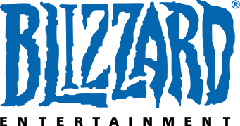

back to newspaper
back to newspaper
The history of Activision Blizzard
FROM: Wikipedia, the free encyclopedia
Activision Blizzard, Inc. is the American holding company for Activision, Blizzard Entertainment and Sierra Entertainment, headquartered in Santa Monica, California, United States. In 2014, Activision Blizzard was the fifth largest gaming company by revenue.

In December 2007, Activision announced that the company and its assets would merge with fellow games developer and publisher Vivendi Games. René Penisson, formerly a member of the Management Board of Vivendi and Chairman of Vivendi Games, would serve as Chairman of Activision Blizzard. Bobby Kotick, once head of Activision, was announced to become President and CEO of Activision Blizzard.
In April 2008, the European Commission permitted the merger to take place. The commission essentially needed to approve that there weren't any antitrust issues in the merger deal.On July 8, 2008, Activision announced that stockholders had agreed to merge. The deal closed on July 9, 2008, and the total transaction was an estimated $18.9 billion.Vivendi was the majority shareholder, with a 52% stake in the company.[6] The rest of the shares were held by institutional and private investors and continue to be traded on the NASDAQ stock market, for the first 10 trading days post closing as ATVID, and subsequently as ATVI. Jean-Bernard Levy will replace René Penisson as chairman of Activision Blizzard.
Activision and Blizzard Entertainment still exist as separate entities.The holding company does not publish games under its central name and instead uses its subsidiaries to publish games, similar to how Vivendi Games operated before the merger.The merger makes Activision parent company of Vivendi Games' former divisions until July 25, 2013.
While Blizzard retained its autonomy and corporate leadership, other Vivendi Games divisions did not. For example, long-time label Sierra ceased operation. With the merger, there was a rumor that if a Sierra product did not meet Activision's requirements, they "won't likely be retained."Some of Sierra's games such as Crash Bandicoot, Spyro the Dragon and Prototype have been retained and are now published by Activision.Also, due to the closure of Sierra, the Sierra Community Forums servers have been shut down as of November 1, 2008 until Sierra was reopened in August 7, 2014.
Results of the merger
Shortly after the conclusion of the merger, Thomas Tippl, CFO, alluded to future layoffs stating that the company "will exterminate some of our overlap through redundancy - but we will treat people fairly and respectfully in that process." Also, games such as Brutal Legend, Ghostbusters: The Video Game, The Chronicles of Riddick: Assault on Dark Athena, World in Conflict: Soviet Assault, 50 Cent: Blood on the Sand, Zombie Wranglers, Leisure Suit Larry: Box Office Bust and Wet were all dropped from the publisher to be picked up by other companies.
Split from Vivendi
On July 25, 2013, Activision Blizzard announced the purchase of 429 million shares from owner Vivendi for $5.83 billion, dropping the shareholder from a 63% stake to 11.8% by the end of the deal in September. Following the conclusion of the deal, Activision Blizzard became an independent company as a majority of the shares are owned by the public. Bobby Kotick and Brian Kelly own a 24.4% stake in the company. In addition, Kotick remains the President and CEO, with Brian Kelly taking over as the Chairman. On October 12, 2013, shortly after approval from the Delaware Supreme court, the company completed the buyback, along the lines of the original plan. Vivendi sold half its remaining stake in May 22, 2014, reducing its ownership to 5.8%, which subsequently helped finance Vivendi's takeover of EMI via Universal Music Group.
Patent Infringement Lawsuits
On March 30, 2012 Worlds, Inc. filed a patent infringement lawsuit in Massachusetts Federal Court alleging Activision Blizzard, Inc et al. had infringed on Worlds, Inc. US Patents Nos. 8,082,501;7,945,856; 7,493,558; and 7,181,690. Worlds, Inc. a small publicly traded IP firm asked for damages arising out of the Activision infringement, including enhanced damages pursuant to 35 U.S.C. 284. Further asking and enjoining Activision and their respective officers, agents, employees, and those acting in privity with them, from further infringement. The infringement covers the highly successful Call of Duty franchise among several other yet to be named game titles.
During pre-trial oral arguments Activision Blizzard lead counsel was quoted on the record stating "billions were at stake" in regard to the claims made by Worlds, Inc.
The case was heard on October 3, 2014 in Massachusetts Federal Court with Judge Denise Caspar presiding. As of December 31, 2014, Judge Denise Caspar had yet to rule on which of the claims would proceed to trial.